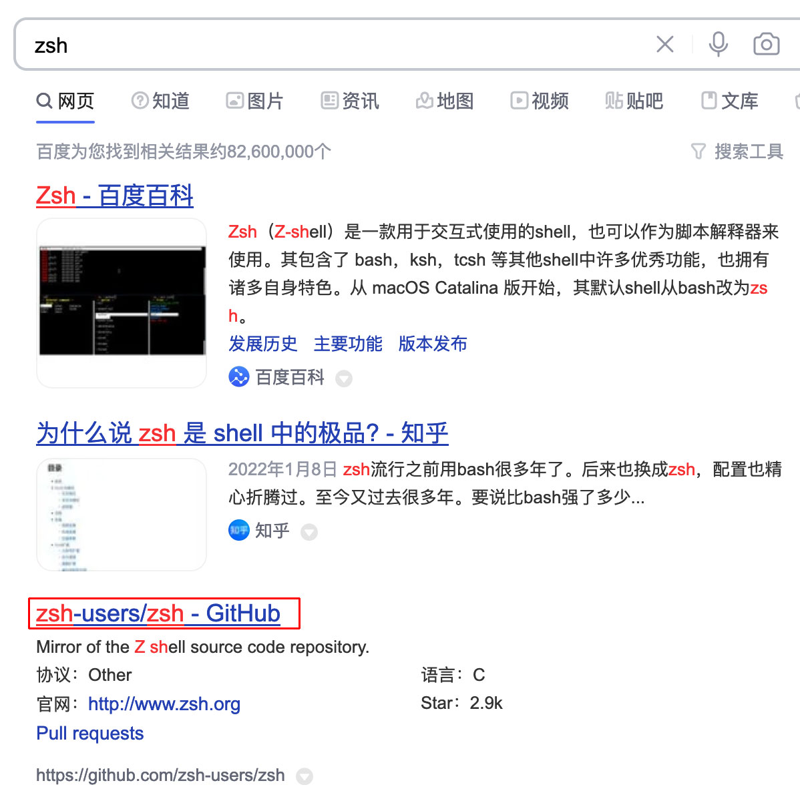
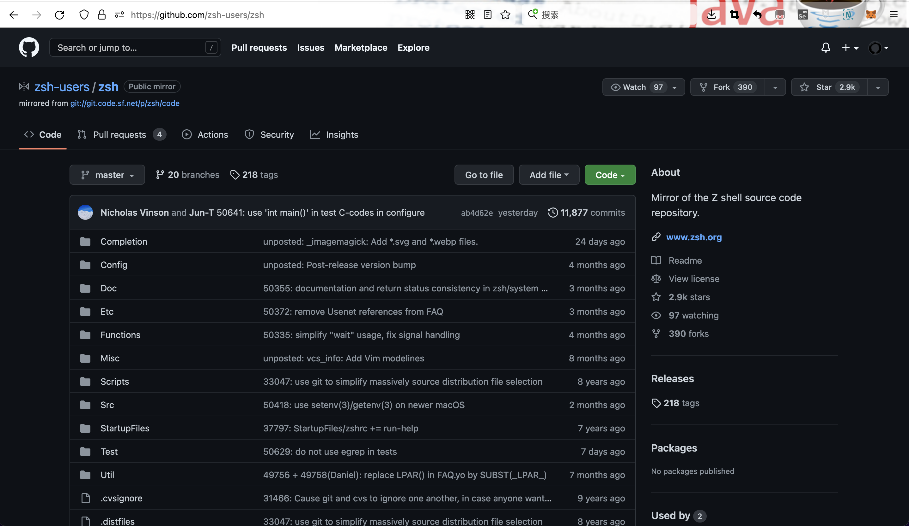
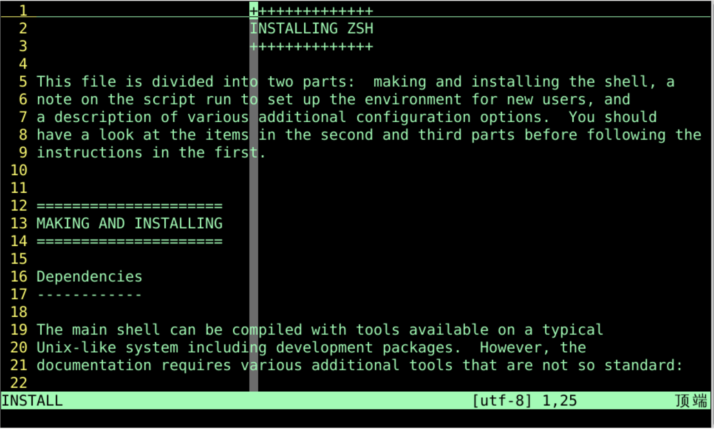
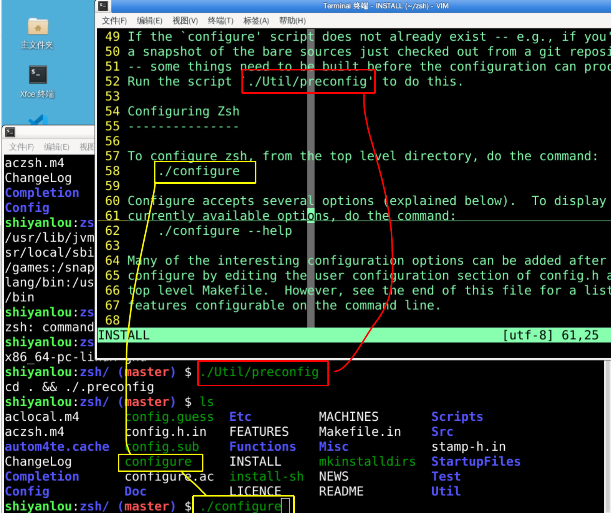
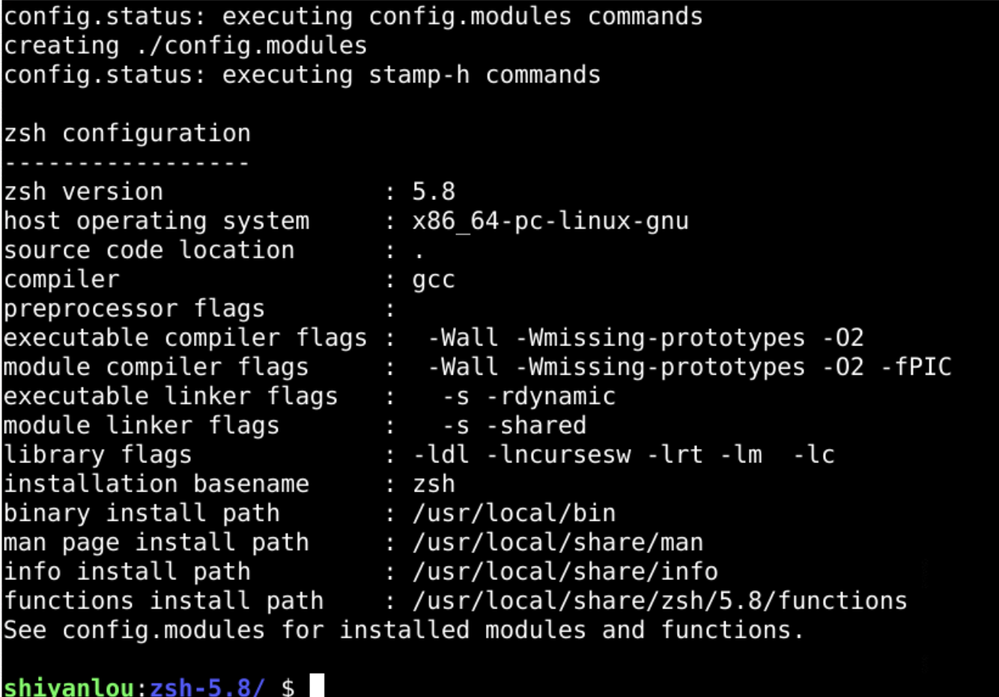
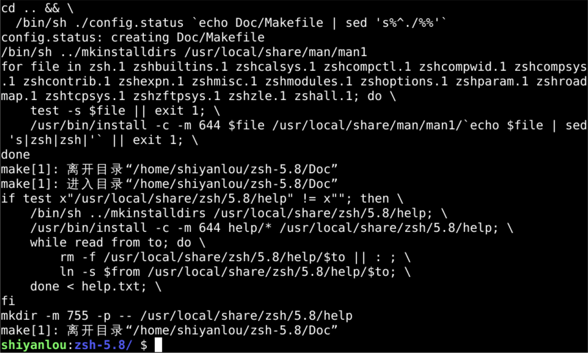
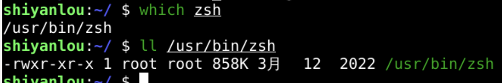
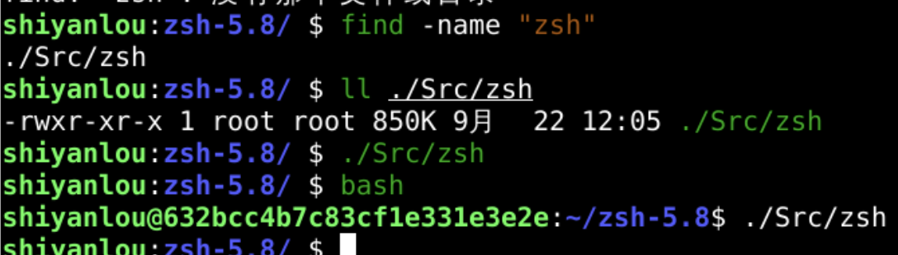
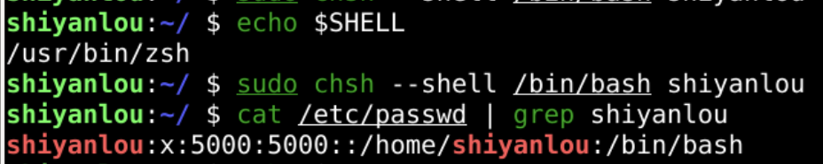

阴历(lunar)
回忆
- 上次我们学习了修改用户的密码
- passwd
- /etc/passwd中看不到用户的密码
- 但是可以看到用户的
- 宿主目录
- 登录shell
- 我们选择了zsh做默认的shell
- 那么什么是zsh呢？
搜索

- github有仓库
zsh

- 可以下载下来
- 也可以用apt的方式源码安装
- 首先修改/etc/apt/sources.list
sudop apt source zsh
安装手册
- 打开INSTALL

- 一行行查看
配置

- 配置文件会根据本机的架构等信息
- 进行配置

编译
sudo make install

检查编译结果

- 这是原来的zsh

- 这是最新的zsh而且可用
实验楼zsh配置
# If you come from bash you might have to change your $PATH.
# export PATH=$HOME/bin:/usr/local/bin:$PATH
# Path to your oh-my-zsh installation.
export ZSH="/home/shiyanlou/.oh-my-zsh"
# Set name of the theme to load --- if set to "random", it will
# load a random theme each time oh-my-zsh is loaded, in which case,
# to know which specific one was loaded, run: echo $RANDOM_THEME
# See https://github.com/ohmyzsh/ohmyzsh/wiki/Themes
ZSH_THEME="philips"
# Set list of themes to pick from when loading at random
# Setting this variable when ZSH_THEME=random will cause zsh to load
# a theme from this variable instead of looking in $ZSH/themes/
# If set to an empty array, this variable will have no effect.
# ZSH_THEME_RANDOM_CANDIDATES=( "robbyrussell" "agnoster" )
# Uncomment the following line to use case-sensitive completion.
# CASE_SENSITIVE="true"
# Uncomment the following line to use hyphen-insensitive completion.
# Case-sensitive completion must be off. _ and - will be interchangeable.
# HYPHEN_INSENSITIVE="true"
# Uncomment the following line to disable bi-weekly auto-update checks.
DISABLE_AUTO_UPDATE="true"
# Uncomment the following line to automatically update without prompting.
# DISABLE_UPDATE_PROMPT="true"
# Uncomment the following line to change how often to auto-update (in days).
# export UPDATE_ZSH_DAYS=13
# Uncomment the following line if pasting URLs and other text is messed up.
DISABLE_MAGIC_FUNCTIONS="true"
# Uncomment the following line to disable colors in ls.
# DISABLE_LS_COLORS="true"
# Uncomment the following line to disable auto-setting terminal title.
# DISABLE_AUTO_TITLE="true"
# Uncomment the following line to enable command auto-correction.
# ENABLE_CORRECTION="true"
# Uncomment the following line to display red dots whilst waiting for completion.
# COMPLETION_WAITING_DOTS="true"
# Uncomment the following line if you want to disable marking untracked files
# under VCS as dirty. This makes repository status check for large repositories
# much, much faster.
# DISABLE_UNTRACKED_FILES_DIRTY="true"
# Uncomment the following line if you want to change the command execution time
# stamp shown in the history command output.
# You can set one of the optional three formats:
# "mm/dd/yyyy"|"dd.mm.yyyy"|"yyyy-mm-dd"
# or set a custom format using the strftime function format specifications,
# see 'man strftime' for details.
# HIST_STAMPS="mm/dd/yyyy"
# Would you like to use another custom folder than $ZSH/custom?
# ZSH_CUSTOM=/path/to/new-custom-folder
# Which plugins would you like to load?
# Standard plugins can be found in $ZSH/plugins/
# Custom plugins may be added to $ZSH_CUSTOM/plugins/
# Example format: plugins=(rails git textmate ruby lighthouse)
# Add wisely, as too many plugins slow down shell startup.
plugins=(git zsh-syntax-highlighting)
source $ZSH/oh-my-zsh.sh
# User configuration
# export MANPATH="/usr/local/man:$MANPATH"
# You may need to manually set your language environment
# export LANG=en_US.UTF-8
# Preferred editor for local and remote sessions
# if [[ -n $SSH_CONNECTION ]]; then
# export EDITOR='vim'
# else
# export EDITOR='mvim'
# fi
# Compilation flags
# export ARCHFLAGS="-arch x86_64"
# Set personal aliases, overriding those provided by oh-my-zsh libs,
# plugins, and themes. Aliases can be placed here, though oh-my-zsh
# users are encouraged to define aliases within the ZSH_CUSTOM folder.
# For a full list of active aliases, run `alias`.
#
# Example aliases
# alias zshconfig="mate ~/.zshrc"
# alias ohmyzsh="mate ~/.oh-my-zsh"
setopt nonomatch
export PROMPT_EOL_MARK=
export XDG_SESSION_TYPE=X11
export PATH=$PATH:/home/shiyanlou/.local/bin
export JAVA_HOME=/usr/lib/jvm/java-11-openjdk-amd64
export JRE_HOME=$JAVA_HOME
export CLASSPATH=.:$JAVA_HOME/lib:$JRE_HOME/lib
export PATH=$JAVA_HOME/bin:$JRE_HOME/bin:$PATH
export GOPATH=/home/shiyanlou/golang
export GOROOT=/usr/local/go
export GOBIN=/home/shiyanlou/golang/bin
export PATH=$PATH:$GOROOT/bin:$GOPATH/bin
export MAVEN_HOME=/usr/share/maven
export MAVEN_CONFIG=/home/shiyanlou/.m2
export PATH=$PATH:$MAVEN_HOME/bin
export CATALINA_HOME=/opt/apache-tomcat-8.5.54
export PATH=$PATH:/usr/local/bin
export NODE_HOME=/usr/sbin/nodejs
export PATH=$PATH:$NODE_HOME/bin
export NODE_PATH=$NODE_HOME/lib/node_modules
export YARN_HOME=/usr/sbin/yarn
export PATH=$PATH:$YARN_HOME/bin
HISTFILE=$HOME/.zsh_history
HISTSIZE=5000
SAVEHIST=5000
setopt BANG_HIST
setopt EXTENDED_HISTORY
setopt INC_APPEND_HISTORY
setopt SHARE_HISTORY
setopt HIST_EXPIRE_DUPS_FIRST
setopt HIST_IGNORE_DUPS
setopt HIST_IGNORE_ALL_DUPS
setopt HIST_FIND_NO_DUPS
setopt HIST_IGNORE_SPACE
setopt HIST_SAVE_NO_DUPS
setopt HIST_REDUCE_BLANKS
setopt HIST_VERIFY
setopt HIST_BEEP
修改用户默认shell
- sudo chsh --shell /bin/zsh shiyanlou

- 此命令可以修改用户默认的登录shell
总结
- 这次我们研究了zsh
- 从源码开始编译安装
- 真的成功了
- 可以用chsh
- 来设置用户的默认shell
- 不过现在经常用的是
- Oh-My-Zsh

- 这个
Oh-My-Zsh和zsh是什么关系呢？🤔 - 下次再说👋